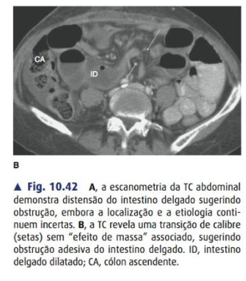

carolzita · pocket 🚑
Obstrução & Volvo
🔍 Diagnóstico
💊 Tratamento
🌀 Volvo
🔪 Passos
✋ Mãos & Fios
⚠️ Complicações
🎯 Macetes
➕ Extra
🔍 Diagnóstico
Tétrade 🧩
- 🌀 Dor em cólica
- 🎈 Distensão (↑ quanto mais distal)
- 🚫 Parada de fezes e flatos
- 🤮 Vômitos (bilioso→fecaloide)
Delgado 🆚 Cólon
Causa #1 ID
🩹 Bridas/aderências
Causa #1 cólon
🎗️ Neoplasia
RX delgado
Moedas empilhadas (válvulas coniventes) 🪙
RX cólon
Haustrações periféricas
🚩 Estrangulamento = operar já
Dor contínua desproporcional · febre · taquicardia · leucocitose · lactato↑ · peritonite · não-realce da parça na TC.
💡 Alça fechadaTravada em 2 pontos (volvo/hérnia) → isquemia rápida = urgência absoluta.
TC c/ contraste EV = padrão-ouro: nível, causa, zona de transição, sofrimento.

Fig. 10.42 — TC: distensão de delgado com zona de transição de calibre (setas) SEM efeito de massa — obstrução adesiva (ID = delgado dilatado; CA = cólon ascendente).
💊 Tratamento
Suporte "drip & suck" 💧
- 🚱 Jejum + SNG descompressiva
- 💧 Cristaloide + corrigir K⁺/alcalose
- 💉 ATB se estrangulamento/sepse
Bridas (ASBO) — WSES 🩹
- Parcial + sem sofrimento → NOM
- 🧪 Gastrografin VO/SNG: contraste no cólon em 24h = resolve (dx + terapêutico)
- ⏱️ NOM até 72h; sem melhora → cirurgia
- 🔭 Adesiólise laparoscópica se 1º episódio/brida única
⚠️ Operar jáEstrangulamento · peritonite · alça fechada · hérnia encarcerada · abdome virgem (não é brida!).
🌀 Volvo
⭐ Regra de ouroSigmoide = DETORCE (endoscopia) 🔦 · Ceco = RESSECA (cirurgia) 🔪
Sigmoide 🟠 (60–75%)
- 👴 Idoso acamado, constipado, megacólon/Chagas
- ☕ Grão de café → QSD
- 🔦 Endoscopia detorce >90% → sonda retal
- ✂️ Sigmoidectomia na MESMA internação (recidiva ~60%)
- 🩸 Inviável/perfurado → Hartmann de urgência
Ceco 🔵
- 🧬 Fixação incompleta do mesentério direito
- ☕ Rim de café → QSE/epigástrio
- 🚫 Endoscopia NÃO (sucesso ~10–15%)
- 🔪 Hemicolectomia direita + anastomose ileocólica

Fig. 10.61 — TC coronal: volvo de cólon direito com torção no cólon ascendente, distensão acentuada do ceco (C) e cólon ascendente (CA).
🐦 Bico de pássaroAfilamento em bird's beak no contraste marca o ponto de torção.
🔪 Passos
Adesiólise 🩹
1
Acesso Hasson longe de cicatriz 🎯
2
Tração-contratração; corta brida com tesoura fria ✂️ (sem energia perto da alça)
3
Corre TODO o delgado (Treitz ↔ válvula ileocecal) 🔎
4
Avalia viabilidade 🟢🔴 (verde de indocianina se dúvida)
Sigmoidectomia 🌀
1
Mobiliza (Toldt E), protege ureter esquerdo ⚡
2
Liga vasos sigmoideos (AMI)
3
Anastomose colorretal 🔵 ou Hartmann se peritonite
✋ Mãos & Fios
✋ Mãos
Direita 🟠
Metzenbaum · grampeador · bisturi
Esquerda 🔵
Babcock/DeBakey segura a alça · tração
🧵 Fios
Pedículo
Vicryl 2-0/3-0 ou LigaSure/clip
Anast. seromuscular
Prolene 3-0/4-0
Anast. total
Vicryl 3-0/4-0
🗜️ PinçasBabcock/DeBakey (atraumática), Doyen (clamp não esmagador), Balfour (afastador).
⚠️ Complicações
⏱️ Precoces
- 💧 Fístula/deiscência (pior: cólon E, urgência)
- 🔴 Isquemia não vista → sepse
- ✂️ Enterotomia iatrogênica / lesão ureter/baço
- ⚡ Distúrbio HE, IRA (3º espaço)
📅 Tardias
- 🔁 Recidiva do volvo (detorção isolada)
- 🩹 Novas aderências
- ➿ Estenose de anastomose · hérnia incisional
🛡️ Prevenir aderênciasMembrana AH-CMC / icodextrina · técnica delicada + hemostasia.
🎯 Macetes & Pega-ratões
☕ Grão de caféSigmoide → QSD · Ceco → QSE. Foge do lado de origem.
🧪 GastrografinChegou no cólon em 24h = destrava. Dx + tratamento.
⏱️ Regra das 72hNOM da brida até 72h; operar depois ↑ mortalidade.
🆕 Abdome virgemSem cirurgia prévia + obstruído = NÃO é brida → operar/investigar.
🪤 Pega-ratões
- ❌ "Volvo de ceco trata por endoscopia" → é ressecção
- ❌ "Detorceu sigmoide → alta" → opera na mesma internação
- ❌ Ogilvie (pseudo-obstrução) ≠ volvo → neostigmina, excluir mecânica
- ❌ Íleo paralítico ≠ mecânico → sem zona de transição
Bancas RS HCPA·GHC·SC·PUC·AMRIGSBridas #1 ID · neoplasia #1 cólon · sigmoide detorce/ceco resseca · Hartmann · alça fechada.
➕ complementos (Notion + atualização)
+1Extra
- Volvo gástrico: Borchardt = dor + ânsia sem vômito + não passa SNG
- Áscaris: óleo mineral, anti-helmíntico depois
- Obstrução maligna: octreotida + corticoide + gastrostomia
- Íleo espástico: porfiria, chumbo, uremia
- Petersen: redemoinho → VLP
+2Toque, padrões & perfis
- 1º passo: toque retal · ampola vazia = mecânica completa · fecaloma → extração + clister
- Suboclusão: diarreia paradoxal, ar na ampola · completa: nada passa
- Alta: vômito bilioso precoce · alcalose hipoclorêmica hipocalêmica
- Baixa: para de evacuar → vômito fecaloide · acidose + lactato
- Perfis: cirurgia prévia = bridas · idoso emagrecido = câncer · acamado = fecaloma
- Contraste: hidrossolúvel, nunca bário
- Bouveret: íleo biliar no piloro/duodeno
- Íleo biliar: enterotomia → colecistectomia depois